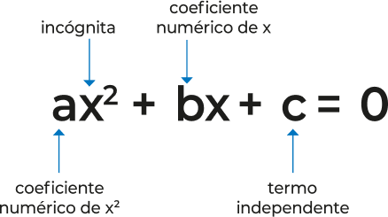

Desde os primórdios da civilização, a humanidade sentiu a necessidade de desenvolver ferramentas para resolver problemas práticos do dia a dia, como medir terras ou prever colheitas. Dentre essas ferramentas, surgiram as equações, fundamentais para descrever e resolver situações envolvendo incógnitas. O expoente de uma incógnita, como o x, desempenha um papel importante na classificação dessas equações.
Na imagem desta abertura podemos ver algumas equações.
Ao final deste capítulo, espera-se que você seja capaz de:
- identificar e resolver equações do 2º grau incompletas e completas;
- utilizar diferentes métodos para resolução de equações do 2º grau;
- analisar o discriminante de uma equação do 2º grau;
- resolver problemas utilizando equações do 2º grau.
Equações do 2º grau com uma incógnita
No 8º ano houve a introdução do estudo da equação do 2º grau. Agora vamos retomar esse estudo e aprofundá-lo.
Definição de equação do 2º grau com uma incógnita
Equação do 2º grau, ou equação quadrática, com uma incógnita é toda equação do tipo: \( ax^2 + bx + c = 0 \) em que x representa a incógnita e a, b e c são os coeficientes numéricos e representam números reais, com a ≠ 0.
Forma Geral
- \(a\) é coeficiente numérico de \(x^2\)
- \(b\) é coeficiente numérico de \(x\)
- \(c\) é denominado termo independente
Assim, por definição, são exemplos de equações do 2º grau com uma incógnita:
Exemplos:
\[ 4x^2 - 9 = 0, \quad \text{em que } \left\{ \begin{array}{l} a = 4 \\ b = 0 \\ c = -9 \end{array} \right. \]
\[ 3x^2 - 5x + 12 = 0, \quad \text{em que } \left\{ \begin{array}{l} a = 3 \\ b = -5 \\ c = 12 \end{array} \right. \]
\[ -x^2 + 3x = 0, \quad \text{em que } \left\{ \begin{array}{l} a = -1 \\ b = 3 \\ c = 0 \end{array} \right. \]
\[ -\frac{x^2}{2} + 11x - 8 = 0, \quad \text{em que } \left\{ \begin{array}{l} a = -\frac{1}{2} \\ b = 11 \\ c = -8 \end{array} \right. \]
1. Qual é o tema do poema?
2. Sublinhe o trecho do poema que reconhece a importância da água para a reprodução dos seres vivos e a manutenção da vida.
3. Como a água absorvida pelas plantas pode passar para outros seres vivos?
4. Use a ilustração a seguir para representar o ciclo da água. Lembre-se de incluir setas e as mudanças de estado físico: condensação e evaporação.
5. . Estudos apontam que a água tratada tem se tornado um recurso cada vez mais escasso. Converse com os colegas sobre os impactos da falta de água para os seres vivos e o que vocês podem fazer para economizar esse recurso
Glossário:
incógnita, coeficiente, termo independente